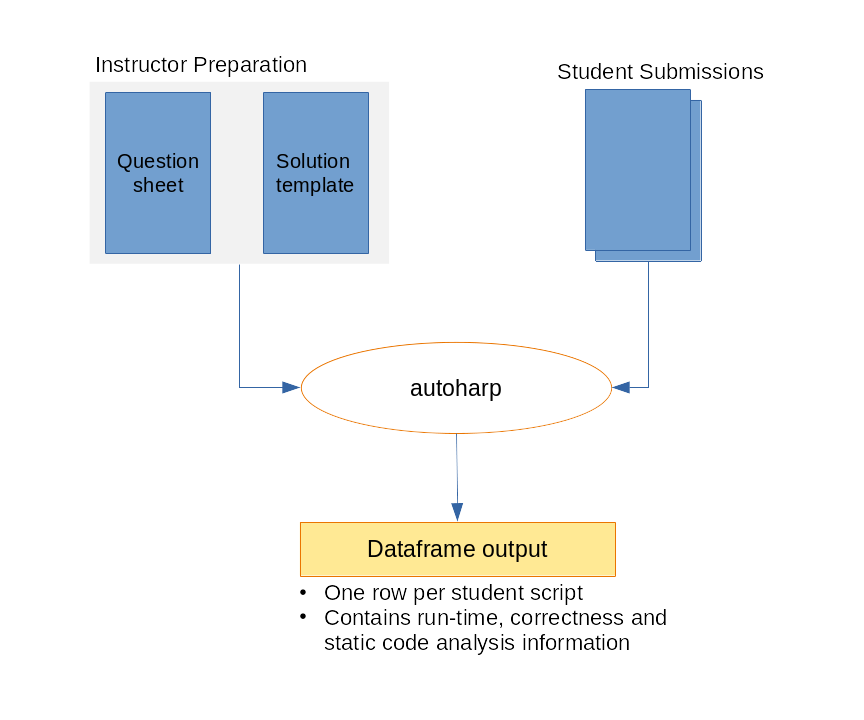

Getting Started with autoharp
getting-started.RmdWhat is autoharp?
autoharp is an R package for semi-automatic
grading of R and R Markdown (Rmd/qmd) scripts. It was designed
at the National University of Singapore to handle the practical
challenges of grading programming assignments at scale:
- Students submit complete, reproducible documents (not isolated code snippets)
- Instructors need to check both output correctness and code quality
- The same workflow must work for 10 or 1,000 submissions
- Some checks must go beyond outputs: e.g., “did the student avoid
using a
forloop?”
autoharp achieves this through four complementary
layers:
| Layer | What it Checks |
|---|---|
| Output correctness | Objects match the reference solution (typed, tolerance-aware) |
| Static code analysis | AST structure: e.g., no for loops, correct function
signature |
| Runtime profiling | Execution time and peak memory usage per submission |
| Code style (lint) |
lintr-based style violations count |
The Big Picture: Four-Phase Workflow

The four-phase autoharp grading workflow: Prepare → Distribute → Grade → Review
The typical autoharp workflow has four phases:
-
Prepare: Write a question sheet and a solution
template (an Rmd with special
autoharp.objs/autoharp.scalarschunk options) - Distribute: Share the question PDF and a blank student template
-
Grade: Run
populate_soln_env()thenrender_one()per student; each runs in a sandboxed R process - Review: Inspect logs, thumbnail galleries, and the Grading App
Installation
You can install autoharp from CRAN with:
install.packages("autoharp")You can also install the development version from GitHub:
# install.packages("devtools")
devtools::install_github("namanlab/autoharp")Then load the package:
Core Concepts
Solution Templates
The heart of autoharp is the solution
template - an R Markdown file that does two things
simultaneously:
- Contains the reference solution to the problem
- Defines test code using special knitr chunk options
Two special chunk options are used in test chunks (chunks whose names match a pattern, default “test”):
| Chunk Option | Purpose |
|---|---|
autoharp.objs |
Lists object names to copy from the solution environment so tests can compare student objects against solution objects |
autoharp.scalars |
Lists scalar variable names that will be created by the test code; these become columns in the output data frame |
Why Rmd? Grading complete documents (rather than isolated snippets) ensures students practice good scientific computing habits: their entire analysis must render cleanly.
The Grading Pipeline
Solution Template (.Rmd)
│
▼
populate_soln_env() --> Solution Environment + Test Script
│
▼
render_one(student.Rmd) --> Grading Results Data Frame
│
▼
log_summary() --> Summary ReportEach render_one() call: 1. Launches a fresh,
sandboxed R process (via
parallel::makePSOCKcluster) 2. Checks for forbidden calls
(system(), setwd(), etc.) 3. Knits the
student’s Rmd with autoharp hooks active 4. Runs the test
script in the student’s environment 5. Returns a data frame with status,
runtime, memory, and test results
Motivating Example
The Problem
Suppose you assign students the following problem:
Write a function
rf(n)that generatesnrandom variates from the density , . Use the inverse transform method. Then create a vectorXof 10,000 variates usingrf().
Step 1: Create a Solution Template
Create solution_template.Rmd:
---
title: "Solution Template"
output: html_document
---
```{r solution}
rf <- function(n) {
u <- runif(n)
u^(1/4) # inverse CDF of f(x) = 4x^3
}
X <- rf(10000)
```
```{r test01, autoharp.objs=c("rf", "X"), autoharp.scalars=c("lenX", "lenfn", "meanX", "sdX")}
# Compare student objects with solution objects
lenX <- (length(X) == length(.X))
lenfn <- (length(formals(rf)) == length(formals(.rf)))
# Check statistical properties
meanX <- (abs(mean(X) - 0.8) < 0.02)
sdX <- (abs(sd(X) - 0.163) < 0.02)
```Step 2: Populate the Solution Environment
soln <- populate_soln_env("solution_template.Rmd", pattern = "test")
# soln is a list with two elements:
# $env: the solution environment (contains .rf, .X and other solution objects)
# $test_fname: path to the extracted test script (code from test chunks)
str(soln)Step 3: Grade a Student Submission
Suppose a student submits student01.Rmd:
result <- render_one(
rmd_name = "student01.Rmd",
out_dir = "output/",
knit_root_dir = getwd(),
soln_stuff = soln
)
# The result is a one-row data frame
print(result)The output data frame contains:
| Column | Description |
|---|---|
fname |
Student’s filename |
time_stamp |
Timestamp of the grading run |
run_status |
"SUCCESS", "FAIL", or
"UNKNOWN"
|
run_time |
Total execution time (seconds) |
run_mem |
Memory usage of the environment |
lenX, lenfn, … |
Scalar test results defined in autoharp.scalars
|
Step 4: Summarise Results Across All Students
# Grade all students in a directory
student_files <- list.files("submissions/", pattern = "\\.Rmd$", full.names = TRUE)
results_list <- lapply(student_files, function(f) {
render_one(rmd_name = f, out_dir = "output/", knit_root_dir = getwd(),
soln_stuff = soln)
})
all_results <- do.call(rbind, results_list)
# Print a summary from the log file
log_summary("output/render_one.log")Checking Code Style
autoharp integrates with the lintr package
to count style violations:
# Count lint violations in a single script
lint_count <- count_lints_one("student01.R")
# Count across all submissions
all_lints <- count_lints_all(
file_names = list.files("submissions/", pattern = "\\.R$", full.names = TRUE)
)
print(all_lints)You can run lint checks separately from the main grading pipeline using these functions.
Checking Rmd Structure
For R Markdown submissions, verify that the file is a valid Rmd:
# Check that the submitted file is a valid Rmd
# Returns TRUE if file has .Rmd extension, YAML header, and R chunks
rmd_check <- check_rmd(fname = "student01.Rmd")
print(rmd_check)Interactive Grading with Shiny Apps
For large classes, the Grading App provides a browser-based interface that wraps the entire workflow:
# Launch the full grading GUI
shiny::runApp(system.file("shiny/grading_app", package = "autoharp"))The Grading App has five tabs:
- Session: start/resume a grading session.
- Object Testing: auto-generate and run correctness tests.
- Template: generate a solution template from a script.
-
Autoharp: run
render_one()for all submissions with progress tracking. - Plots: review student plots side-by-side with the solution.
See the Shiny Apps Guide for full details.
Next Steps
-
TreeHarp
Tutorial: learn AST-based static analysis: detect
forloops, check function signatures, and more - Complete Workflow: a detailed end-to-end walkthrough with a real data analysis assignment
- Shiny Apps: use the Grading App, Similarity App, and Student Solution Checker
- Function Reference: full API documentation
Getting Help
- 📋 GitHub Issues: bug reports and feature requests
- 📖 Full Documentation: pkgdown site